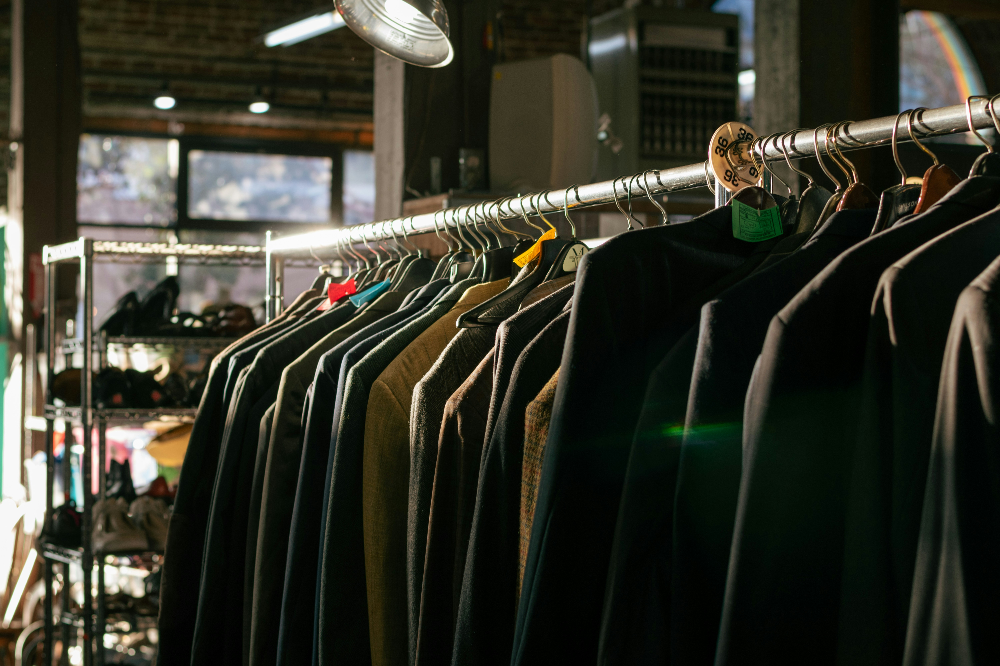
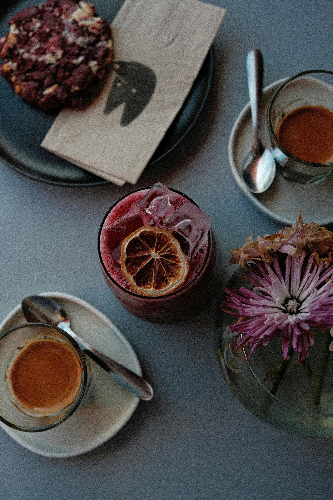

Unsere Idee hinter Spotly:
Spotly ist unsere Art, Konstanz neu zu entdecken! Durch echte Tipps von echten Menschen. Wir, Efe-liz und Moritz, haben Spotly entwickelt, weil wir gemerkt haben, wie schwer es ist, gute Orte zu finden, wenn man neu in der Stadt ist. Auf Spotly teilen Locals ihre Lieblingsplätze, von kleinen Cafés bis zu geheimen Spots am See.
Entdecke Konstanz neu!

Natur & Aussicht

Shops & Märkte

Events & Kultur

Cafés & Essen